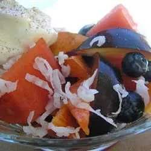

Home
Summer Fruit Salad

Photo Courtesy of Teri Carillo-Fox (allrecipes.com)
Description
Submitter says this recipe was created to trick the kids into eating their fruit. I'd eat my fruit to based on this wonderful concoction
The recipe makes enough for 12 servings.
Ingredients
- 3 cups seedless watermelon, 1-inch cubed
- 1 cup fresh blueberries
- 1 large white peach, pitted and cut into small cubes
- 1 large nectarine, pitted and cut into small cubes
- 1 black plum, pitted and cut into small cubes
- 1/2 cup seedless red grapes, halved
- 1/2 cup shredded coconut
- 1 teaspoon ground cinnamon
- 1/2 cup nondairy whipped topping (Optional)
Steps
- Gently fold watermelon, blueberries, peach, nectarine, plum, and grapes together in a large bowl.
- Sprinkle coconut and cinnamon over fruit; fold together.
- Cover the bowl with plastic wrap; refrigerate at least 1 hour befor serving.
- Optionally top with whipped topping.
:max_bytes(150000):strip_icc():format(webp)/855858-e382c9d6dd754b209f2148664e4ba50c.jpg){kind=link}